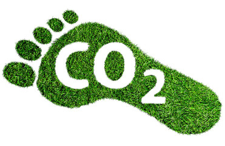
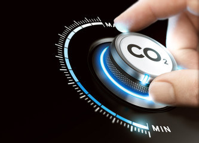
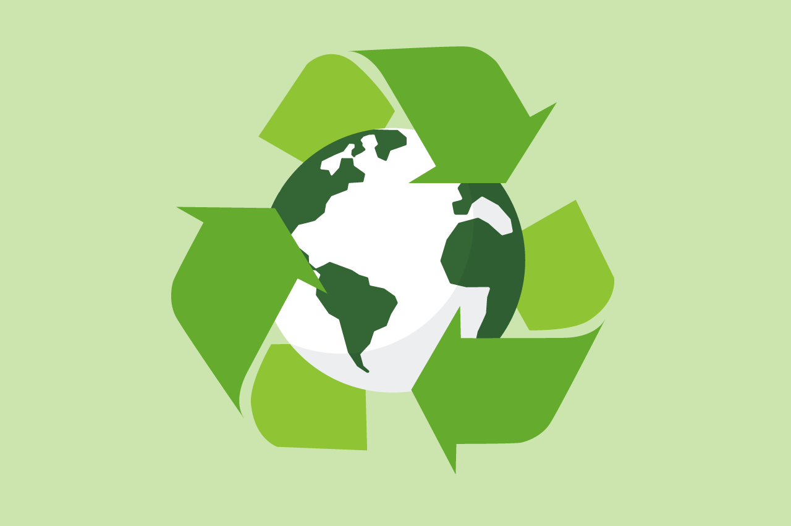

- Calculating your carbon footprint can be an important first step in reducing your impact on the environment. Here are some reasons why it's important to calculate your carbon footprint:
- Awareness: By calculating your carbon footprint, you become more aware of how your daily actions and choices impact the environment. This can help you identify areas where you can make changes to reduce your carbon emissions.
- Personal Responsibility: Understanding your own carbon footprint can help you take responsibility for your impact on the environment. When you know how much carbon you are responsible for, you can take steps to reduce your emissions and contribute to a more sustainable future.
- Comparison: By comparing your carbon footprint to the average for your region or country, you can see how your emissions stack up against others. This can provide motivation to make changes and reduce your impact.
- Advocacy: Knowing your own carbon footprint can also help you advocate for change at a larger scale. By sharing your story and advocating for policies that reduce carbon emissions, you can help make a difference on a broader level.


